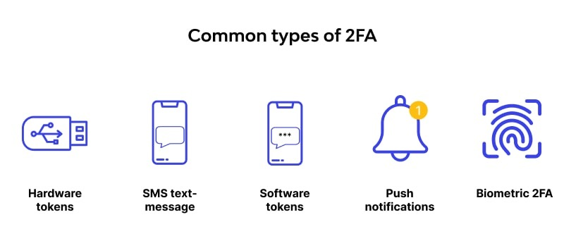

What is Two-Factor Authentication?
SMS-Based 2FA
This method sends a code to the user's mobile phone via SMS, which they must enter to access their account. While convenient, it's vulnerable to SIM swap attacks.
Authenticator Apps
Apps like Google Authenticator or Authy generate time-limited codes. They're more secure than SMS because they're not tied to the phone's SIM card.
Hardware Tokens
Physical devices that generate a login code at the push of a button. They offer a high level of security but can be less convenient due to the need to carry the device.